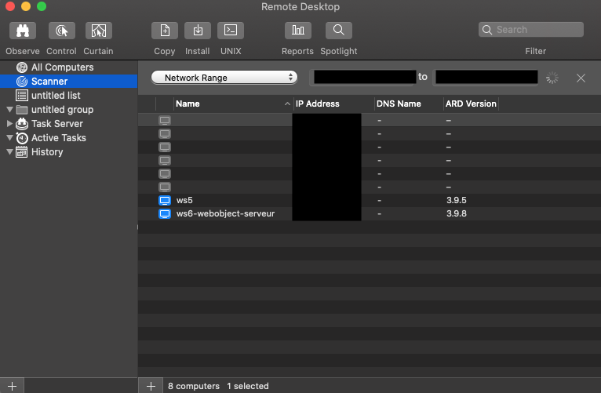
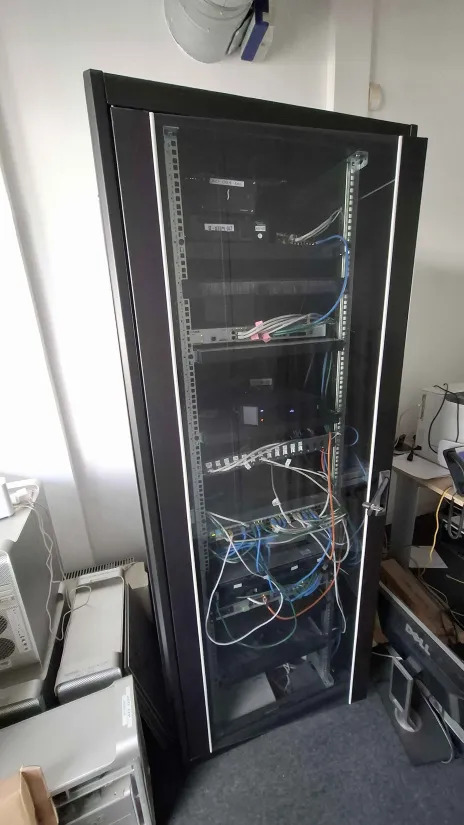

Administration distante
Remote Desktop · macOS
Utilisation de Microsoft Remote Desktop depuis macOS pour administrer les serveurs Windows hébergeant les solutions Algodata.

Infrastructure physique
Maintenance serveurs
Participation à la maintenance physique des serveurs : vérification matérielle, remplacement de composants, interventions en salle serveur.
Application web de gestion de leads et de suivi commercial. Administration depuis macOS via Microsoft Remote Desktop vers le serveur Windows hébergeant la solution.
Tâches réalisées
- Connexion au serveur via RDP depuis macOS
- Mise à jour et maintenance des dépendances applicatives
- Surveillance des logs et gestion des erreurs
- Sauvegarde et vérification de l'intégrité des données
- Gestion des droits d'accès utilisateurs
Technologies
Solution de gestion intégrée pour les processus métier. Administration depuis macOS via RDP avec accès sécurisé à l'environnement Windows Server distant.
Tâches réalisées
- Administration via Remote Desktop depuis macOS
- Configuration et paramétrage des modules applicatifs
- Diagnostic et résolution d'incidents de production
- Gestion des déploiements et mises à jour de version
- Contrôle des performances et optimisation des ressources
Technologies
Portail web principal d'Algodata. Administration du serveur IIS depuis macOS via Remote Desktop, gestion du déploiement et maintien de la disponibilité.
Tâches réalisées
- Administration du serveur IIS via RDP
- Déploiement des mises à jour et assets statiques
- Configuration des règles IIS (redirections, HTTPS, headers)
- Gestion des certificats SSL et monitoring de disponibilité
- Analyse des logs d'accès et détection des anomalies
Technologies
Serveur de messagerie d'entreprise. Administration depuis macOS via RDP, gestion des comptes et sécurisation des flux entrants et sortants.
Tâches réalisées
- Administration du serveur mail via RDP depuis macOS
- Création, modification et suppression des comptes
- Configuration DNS (MX, SPF, DKIM, DMARC)
- Gestion des règles anti-spam et listes noires/blanches
- Surveillance des files SMTP et résolution des blocages
Technologies
Administration des bases de données PostgreSQL via pgAdmin 4 depuis macOS. Gestion, maintenance et surveillance des bases hébergeant les données des solutions Algodata.
Tâches réalisées
- Navigation et administration via pgAdmin 4 sur macOS
- Exécution de requêtes SQL de consultation et maintenance
- Gestion des rôles, utilisateurs et droits d'accès
- Sauvegarde et restauration des bases (pg_dump)
- Surveillance des performances et analyse des requêtes lentes
- Vérification de l'intégrité des données et gestion des index
Technologies